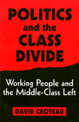

<body bgcolor="#FFFFFF" text="#000000" link="#0000FF" vlink="#CC0000" alink="#CC0000"><center><hr width="350" size="1" align="center" noshade>Examining the impact of class status on political participation<hr width="350" size="1" align="center" noshade><p><a href="https://cdcshoppingcart.uchicago.edu/Cart/ChicagoBook.aspx?ISBN=9781566392549&&PRESS=temple" target="_top">Buy this book!</a> | <a href="https://cdcshoppingcart.uchicago.edu/Cart/Cart.aspx?PRESS=temple" target="_top">View Cart</a> | <a href="https://cdcshoppingcart.uchicago.edu/Cart/Cart.aspx?PRESS=temple" target="_top">Check Out</a></p><p></p></center><!--none//--><h1>Politics and the Class Divide</h1>
<H2>Working People and the Middle Class Left</H2>
<h3>David Croteau</h3>
<P>cloth 1-56639-254-3 $84.50, Dec 94, <FONT COLOR=#990033>Out of Stock Unavailable</FONT>
<br>paper 1-56639-255-1 $35.95, Dec 94, <FONT COLOR=#990033>Available</FONT>
<BR> 320 pp
6x9
4&nbsp;tables 3&nbsp;figures
</P><h3 align="center"><P><font color="#996633">Finalist for Transformational Politics Book Award, American Political Science Association,
1996</font></P>
</H3>
<BLOCKQUOTE><I>"In this useful introduction to the connection between social class and political participation in the modern United States, David Croteau explores the 'class divide' separating middle-class activism and working-class non-participation in left political and social movements."</I>
<br>&#151<b><I>Labour History Review</I></b><I></I></BLOCKQUOTE>
<ul><p><I>"People don't believe they have a say anymore, so they've given up."</I></ul>
<p>That's the cynical conclusion of one worker in this study of the relationships between working people and the middle-class left. This rare accessible book on class differences in American life examines the impact of class status on an individual's participation&#151or non-participation&#151in the political process.
<p>Focusing on the relative absence of white working-class involvement in many contemporary U.S. liberal and left social movements, David Croteau goes straight to the source: members of the working class and activists in the environmental, peace, women's, and other social movements. Croteau rejects standard assumptions that apathy or simple conservatism explain working-class nonparticipation. Instead, he highlights the role of class-based resources and explores how varying cultural "tools" developed in different classes are more or less helpful in navigating and influencing the existing political environment. Commonly, he finds, the result is a middle-class sense of power and entitlement and a working-class sense of powerlessness and fatalism.
<p>Contemplating the future of social movements, he explores how lack of diversity hurts the effectiveness of what have become isolated middle-class movements, and proposes solutions that would increase the future political participation of working people in social movements.
<BR>&nbsp;<h2>Excerpt</h2><P>Excerpt available at <a href="http://www.temple.edu/tempress">www.temple.edu/tempress</a></p>
<BR>&nbsp;<h2>Contents</h2><P>
<p>Preface
<br>Acknowledgments
<br>Introduction: Different Worlds
<p><b>Part I: Democracy, Social Movements, and Class</b>
<br>1. The Promise of Democracy
<br>2. The Changing Face of Social Movements
<br>3. Class and Politics
<p><b>Part II: Class, Culture, and Political Participation</b>
<br>4. "It's Just Politics": Politicians and the System
<br>5. "It Doesn't Make a Difference": The Absence of Efficacy
<br>6. "People Really Don't Think About It": Interest and Motivations
<br>7. "People Have Got Their Hands Full": Material Resources and Constraint
<br>8. "They're Speaking the Same Language": Cultural Resources
<br>9. "It Takes a Special Kind of Person": Knowledge
<br>10. "You Do Your Work, You Pay Your Bills...You Hope It All Turns Out Okay": Politics, Work, and the Private Citizen
<br>11. Class Diversity and the Future of Social Movements
<p>Appendix A: Class: Structure and Collective Action
<br>Appendix B: The Concept of Culture
<br>Appendix C: Methods
<br>Notes
<br>References
<br>Index
</P><BR>&nbsp;<H2>About the Author(s)</H2>
<P><B>David Croteau</B>, Assistant Professor of Sociology at Virginia Commonwealth University, is co-author of <I>By Invitation Only: How the Media Limits Political Debate</I>.</P>
<BR><H2>Subject Categories</H2>
<p><A HREF="/tempress/political.html" TARGET="_top">Political Science and Public Policy</a>
<BR><A HREF="/tempress/sociology.html" TARGET="_top">Sociology</a>
</p>
<BR><h2 class="inpageheading">In the series</H2>
<P><I><a href="http://www.temple.edu/tempress/labor_change.html" onMouseOver="window.status='Click for other books in this series!'; return true;" onMouseOut="window.status=''; return true;" target="_top">Labor and Social Change</a></i>, edited by Paula Rayman and Carmen Sirianni.
</p><p><i>Labor and Social Change</i>, edited by Paula Rayman and Carmen Sirianni, includes books on workplace issues like worker participation, quality of work life, shorter hours, technological change, and productivity, as well as union and community organizing and ethnographies of particular occupations.</p>
<p align="center"><a href="https://cdcshoppingcart.uchicago.edu/Cart/ChicagoBook.aspx?ISBN=9781566392549&&PRESS=temple" target="_top">Buy this book!</a> | <a href="https://cdcshoppingcart.uchicago.edu/Cart/Cart.aspx?PRESS=temple" target="_top">View Cart</a> | <a href="https://cdcshoppingcart.uchicago.edu/Cart/Cart.aspx?PRESS=temple" target="_top">Check Out</a></p><p><font face="Arial" size="1"><a href="copyright.html" onMouseOver="window.status='Web Copyright Policy';return true;" onMouseOut="window.status=''" title="Web Copyright Policy">&copy;</a> 2015 <a href="http://www.temple.edu" target="new" onMouseOver="window.status='Link to Temple University home page';return true;" onMouseOut="window.status=''" title="Link to Temple University home page">Temple University</a>. All Rights Reserved. http://www.temple.edu/tempress/titles/1142_reg.html</font></p>